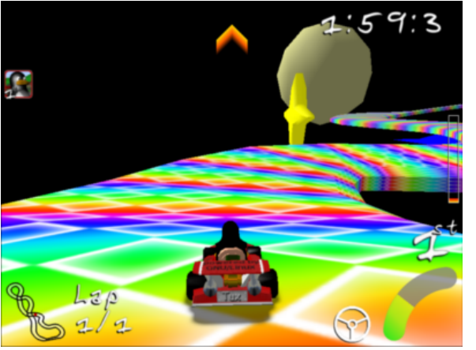
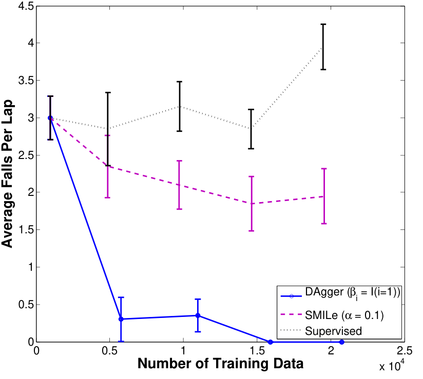
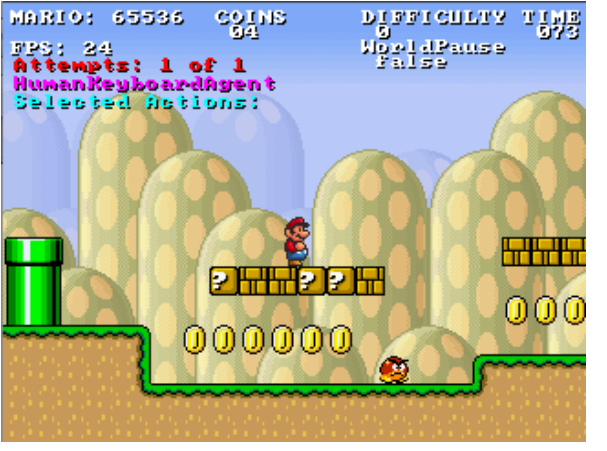
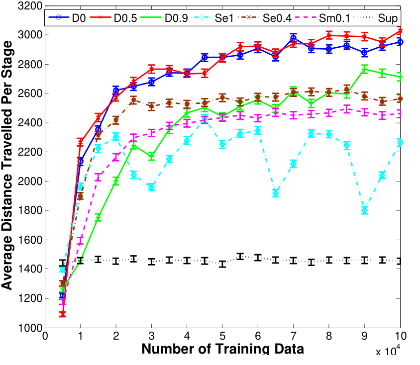
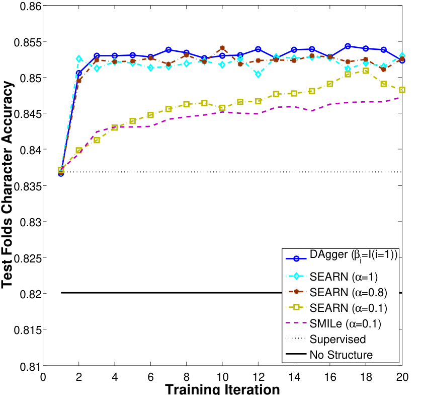

把模仿学习与结构化预测归约为无遗憾在线学习A Reduction of Imitation Learning and Structured Prediction to No-Regret Online Learning
像模仿学习这样「未来观测依赖先前预测（动作）」的序列预测问题，违反了统计学习中常见的i.i.d. 假设。这在理论上——也常常在实践上——导致性能很差。近来一些方法（Daumé III et al., 2009; Ross and Bagnell, 2010）在此设定下给出了更强的保证，但仍不太令人满意：它们训练的是非平稳或随机策略，并且需要大量迭代。本文提出一种新的迭代算法，它训练一个平稳确定性策略，并可以看作在线学习设定下的无遗憾算法。我们证明，任何这样的无遗憾算法，配合额外的归约假设，必然能找到在该序列式设定下由它自己引出的观测分布上表现良好的策略。我们在两个具有挑战性的模仿学习问题以及一个基准序列标注问题上展示了这一新方法优于先前方法。
正文、图表与参考文献均来自源 PDF 解析结果。专业术语、模型名、人名按要求保留原文；术语上的金色虚线表示可悬停（触屏可点按）查看中文解释。参考文献整节保留英文原文不译。原文用 ε 表示误差率、用 ℓ 表示替代损失（surrogate loss），译文保留这两个符号。
1 引言
序列预测问题在实践中很常见。例如，多数机器人系统必须能根据随时间逐步揭示的一串观测，预测/做出一个动作序列。在标准控制方法失效的复杂机器人系统中，我们常常只能求助于学习一个能做出这类预测的控制器。模仿学习技术——用良好行为的专家演示来学习控制器——已被证明在实践中非常有用，并在多种应用中达到了当时最优的性能（Schaal, 1999; Abbeel and Ng, 2004; Ratliff et al., 2006; Silver et al., 2008; Argall et al., 2009; Chernova and Veloso, 2009; Ross and Bagnell, 2010）。模仿学习的一个典型做法是训练一个分类器或回归器，在「已遇观测（输入）与专家所做动作（输出）」的训练数据上预测专家的行为。然而，由于在执行学到的策略时，学习器的预测会影响未来的输入观测/状态，这违反了大多数统计学习方法所依赖的关键 i.i.d. 假设。
忽视这一问题会在理论与实践上都导致糟糕表现（Ross and Bagnell, 2010）。特别地，一个在专家所遇状态/观测分布上以概率 ε 犯错的分类器，在它自己引出的状态分布下、在 T 步期望中可能犯多达 T2ε 个错误（Ross and Bagnell, 2010）。直观上这是因为：学习器一旦犯错，就可能遇到与专家演示下完全不同的观测，从而造成错误累积。
近来的方法（Ross and Bagnell, 2010）通过训练若干轮、并让学习器影响「提供专家演示的输入状态」（借助在系统中执行自己的控制）来保证期望错误数在任务时长 T 与误差 ε 上线性（或近似线性）。其中一种方法（Ross and Bagnell, 2010）通过为序列中每个时间步各训练一个策略（从第一步开始）来学习一个非平稳策略。遗憾的是，当 T 很大或定义不清时这并不实用。另一种称为 SMILe（Ross and Bagnell, 2010）的方法类似 SEARN（Daumé III et al., 2009）与 CPI（Kakade and Langford, 2002），通过在每轮训练中向混合中新增一个策略，训练一个平稳随机策略（若干策略的有限混合）。然而这在实践应用中可能并不令人满意：混合中的某些策略比其他策略差，学到的控制器可能不稳定。
我们提出一种新的模仿学习元算法，它学习一个平稳确定性策略，并保证在该策略引出的状态分布下表现良好（错误/代价数随 T 与分类代价 ε 线性增长）。我们采用归约式方法（Beygelzimer et al., 2005），从而能够复用现有的监督学习算法。我们的方法实现简单，除监督学习子程序之外没有自由参数，所需迭代数随问题的有效时长近似线性增长。它天然同时处理连续与离散预测。我们的方法与无遗憾在线学习算法（Cesa-Bianchi et al., 2004; Hazan et al., 2006; Kakade and Shalev-Shwartz, 2008）（特别是 Follow-The-Leader）密切相关，但在我们的设定下更好地利用了专家。此外我们表明，任何无遗憾学习器都可以按某种特定方式使用，以学到一个具有类似保证的策略。
我们先建立记号与设定，讨论相关工作，然后给出 DAGGER（DAtaset AGGrEgation，数据集聚合）方法。我们用无遗憾分析加归约分析（Beygelzimer et al., 2005）来分析该方法。除归约分析之外，我们还用 online-to-batch 技术（Cesa-Bianchi et al., 2004）考察该方法的样本复杂度。我们展示 DAGGER 可扩展，并在实践中于两个具有挑战性的模仿学习问题上优于先前方法：1）在 3D 赛车游戏（Super Tux Kart）中学习开车的转向；2）在给定输入图像特征与人类专家（以及近优规划器）对应动作的情况下学习玩 Super Mario Bros.。仿照 Daumé III et al. (2009) 把结构化预测视为退化的模仿学习问题的做法，我们把 DAGGER 应用于 OCR（Taskar et al., 2003）基准预测问题，仅用单遍贪心预测就取得了与当时最优方法（Taskar et al., 2003; Ratliff et al., 2007; Daumé III et al., 2009）相当的结果。
2 预备知识
我们首先引入与本设定相关的记号。记 Π 为学习器所考虑的策略类，T 为任务时长。对任意策略 π，令 dπt 表示当学习器从时间步 1 到 t − 1 执行策略 π 时、时刻 t 的状态分布。此外记 dπ = 1TT∑t=1dπt 为跟随策略 π 走 T 步时状态的平均分布。给定状态 s，记 C(s, a) 为在所考虑任务中于状态 s 执行动作 a 的期望即时代价，并记 Cπ(s) = 𝔼a∼π(s)[C(s, a)] 为 π 在 s 处的期望即时代价。我们假定 C 有界于 [0, 1]。执行策略 π 共 T 步的总代价（即 cost-to-go，剩余代价）记为 J(π) = T∑t=1𝔼s∼dπt[Cπ(s)] = T 𝔼s∼dπ[Cπ(s)]。
在模仿学习中，我们未必知道或观测到特定任务的真实代价 C(s, a)。相反，我们观测专家演示，并试图基于 π 模仿专家策略 π* 的程度，对任意代价函数 C 给出 J(π) 的界。记 ℓ 为我们最小化的、观测到的替代损失函数，它代替 C。例如 ℓ(s, π) 可以是 π 在状态 s 处相对 π* 的期望 0-1 损失，或 π 相对 π* 在 s 处的平方/合页损失。重要的是，在许多情形下 C 与 ℓ 可以是同一个函数——例如当我们关心的是优化学习器预测专家所选动作的能力时。
我们的目标是找到策略 π̂，使它在自己引出的状态分布下的观测替代损失最小，即：
由于系统动力学既未知又复杂，我们无法计算 dπ，只能在系统中执行 π 来采样它。因此，由于输入分布依赖于策略 π 本身，这是一个非 i.i.d. 的监督学习问题。策略与由此产生的分布之间的相互作用使优化变得困难：即使损失 ℓ(s, ·) 对所有状态 s 都是关于 π 的凸函数，目标也仍然非凸。下面我们简要回顾先前方法及其保证。
2.1 模仿学习的监督式做法
模仿学习的传统做法忽略分布的变化，直接在专家所遇状态分布 dπ* 下训练一个表现良好的策略 π。这可以用任何标准监督学习算法实现。它求得的策略是 π̂sup：
假定 ℓ(s, π) 是 0-1 损失（或 0-1 损失的上界），则对任何有界于 [0, 1] 的任务代价函数 C 有如下性能保证：
定理 2.1（Ross and Bagnell, 2010） 设 𝔼s∼dπ*[ℓ(s, π)] = ε，则 J(π) ≤ J(π*) + T2ε。
证明. 由 Ross and Bagnell (2010) 的结果可得，因为 ε 是 π 在 dπ* 上 0-1 损失的上界。∎
注意这个界是紧的，即存在这样的问题：在 dπ* 上 0-1 损失为 ε 的策略 π 会带来随 T 二次增长的额外代价。Kääriäinen (2006) 在序列预测设定下展示了这一点1，而 Ross and Bagnell (2010) 给出了一个模仿学习例子，其中 J(π̂sup) = (1 − εT)J(π*) + T2ε。因此传统监督学习做法由于 T 的二次增长而性能保证很差。我们更希望方法能保证随 T 与 ε 线性或近似线性增长。下面两种来自 Ross and Bagnell (2010) 的方法在某些类模仿学习问题上做到了这一点，包括所有替代损失 ℓ 上界 C 的情形。
2.2 前向训练
Ross and Bagnell (2010) 提出的前向训练算法迭代 T 轮，训练一个非平稳策略（每个时间步 t 一个策略 πt）：在第 t 轮，πt 被训练为在「由已训练好的策略 π1, π2, …, πt−1 在时刻 t 引出的状态分布」上模仿 π*。这样 πt 就在它执行时实际将遇到的状态分布上训练。因此前向算法保证：在学到的策略所引出的状态分布下的期望损失与训练时的平均损失一致，从而改善性能。
我们在此给出一个比 Ross and Bagnell (2010) 稍更一般的定理，它对任何能在自己状态分布下保证 ε 替代损失的策略 π 都成立。这将有助于界定我们在第 3 节提出的新方法的性能。
记 Qtπ′(s, π) 为在初始状态 s 执行 π、随后跟随策略 π′ 的 t 步代价，并假定 ℓ(s, π) 是 0-1 损失（或 0-1 损失的上界），则对任何有界于 [0, 1] 的任务代价函数 C 有下述性能保证：
定理 2.2 设 π 满足 𝔼s∼dπ[ℓ(s, π)] = ε，且对所有动作 a、t ∈ {1, 2, …, T} 以及 dπt(s) > 0 都有 QT−t+1π*(s, a) − QT−t+1π*(s, π*) ≤ u，则 J(π) ≤ J(π*) + uT ε。
证明. 我们沿用与 Ross and Bagnell (2010) 类似的证明。给定策略 π，考虑策略 π1:t：它在前 t 步执行 π，随后执行专家 π*。于是
= J(π*) + T∑t=1𝔼s∼dπt[QT−t+1π*(s, π) − QT−t+1π*(s, π*)] ≤ J(π*) + uT∑t=1𝔼s∼dπt[ℓ(s, π)] = J(π*) + uT ε
该不等式来自「ℓ(s, π) 上界 0-1 损失」这一事实，从而界定了 π 与 π* 在 s 处选出不同动作的概率；当二者选不同动作时，cost-to-go 的增加 ≤ u。∎
在最坏情况下 u 可能是 O(T)，此时前向算法相对传统监督学习做法没有任何改进。但在许多情形下 u 是 O(1) 或关于 T 次线性，前向算法就能带来更好性能。例如若 C 是相对专家的 0-1 损失，则 u ≤ 1。此外，如果 π* 能从 π 所犯错误中恢复——意即在少数几步内 π* 就回到与「一开始就执行 π*」相近的状态分布——则 u 会是 O(1)。2前向算法的一个缺点是：当 T 很大（或未定义）时它不实用，因为必须顺序训练 T 个不同策略，且不能在这 T 轮完成前停止。因此它无法应用于大多数真实场景。
2.3 随机混合迭代学习（SMILe）
Ross and Bagnell (2010) 提出的 SMILe 缓解了这一问题：它采用类似 SEARN（Daumé III et al., 2009）的做法，在若干轮中训练一个随机平稳策略，因此在 T 很大或未定义时可以实际应用。SMILe 初始用一个总是查询并执行专家动作选择的策略 π0。在第 n 轮，训练策略 π̂n 使其在 πn−1 引出的轨迹分布下模仿专家，然后更新 πn = πn−1 + α(1 − α)n−1(π̂n − π0)。该更新可解释为：在任意步以概率 α(1 − α)n−1 执行策略 π̂n，并移除相同概率的「执行所查询专家动作」。在第 n 轮，πn 是 n 个策略的混合，使用所查询专家动作的概率为 (1 − α)n。我们可以在任意第 N 轮停止算法，返回重新归一化后的策略 π̃N = πN − (1 − α)Nπ01 − (1 − α)N，它不再查询专家。Ross and Bagnell (2010) 表明，对某类问题，取 α 为 O(1/T2)、N 为 O(T2 log T) 可保证关于 T 与 ε 的近似线性遗憾。
3 数据集聚合（DAGGER）
我们现在介绍 DAGGER（Dataset Aggregation，数据集聚合），一个迭代算法，它训练确定性策略，并在该策略引出的状态分布下取得良好的性能保证。
在最简形式下，算法如下进行。第一轮，它用专家策略收集一批轨迹数据集 D，并训练策略 π̂2 使其在这些轨迹上最像专家。然后在第 n 轮，它用 π̂n 收集更多轨迹，并把这些轨迹加入数据集 D。下一个策略 π̂n+1 是在整个数据集 D 上最像专家的策略。
- 初始化 D ← ∅。
- 把 π̂1 初始化为 Π 中任意策略。
- for i = 1 to N do
- 令 πi = βiπ* + (1 − βi)π̂i。
- 用 πi 采样 T 步轨迹。
- 得到数据集 Di = {(s, π*(s))}：πi 访问到的状态，以及专家给出的动作。
- 聚合数据集：D ← D ∪ Di。
- 在 D 上训练分类器 π̂i+1。
- end for
- 返回在验证集上最好的 π̂i。
换句话说，DAGGER 在每轮于当前策略下收集一个数据集，并在所有已收集数据集的聚合上训练下一个策略。该算法背后的直觉是：随着迭代进行，我们基于以往经验（训练轮次）不断扩充「学到的策略在执行时很可能遇到」的输入集合。该算法也可以解释为Follow-The-Leader 算法：在第 n 轮我们事后（即在迄今为止所有轮次所见轨迹之上）挑选最佳策略 π̂n+1。
为了更好地利用模仿学习设定中专家在场这一条件，我们可选地允许算法在第 i 轮使用修改后的策略 πi = βiπ* + (1 − βi)π̂i，在收集下一个数据集时以一定比例的时间查询专家来选择控制量。这在实践中常常是可取的：最初几个策略数据点相对很少，可能犯更多错误，并造访那些随策略改进而变得无关的状态。
我们通常取 β1 = 1，这样在从专家行为获取数据之前不必指定初始策略 π̂1。接着我们可以取 βi = pi−1，使使用专家的概率像 SMILe 与 SEARN 那样指数衰减。下面我们表明，唯一的要求是序列 {βi} 满足当 N → ∞ 时 β̄N = 1NN∑i=1βi → 0。上面描述的简单、无参数版本正是 βi = I(i = 1) 这一特例（I 为指示函数），它在实践中往往表现最好（见第 5 节）。一般的 DAGGER 算法详见算法 3.1。我们下一节分析的主要结果是对 DAGGER 的下述保证。记 π1:N 表示策略序列 π1, π2, …, πN。假定 ℓ 在 Π 上强凸且有界。假设对某个与 T 无关的常数 α，对所有 i 有 βi ≤ (1 − α)i−1。令 εN = minπ∈Π 1NN∑i=1𝔼s∼dπi[ℓ(s, π)] 为事后最佳策略的真实损失。则在无限样本情形（每轮有无限条采样轨迹）下有：
定理 3.1 对 DAGGER，若 N 为 Õ(T)，则存在策略 π̂ ∈ π̂1:N 使得 𝔼s∼dπ̂[ℓ(s, π̂)] ≤ εN + O(1/T)。
特别地，该结论对策略 π̂ = arg minπ∈π̂1:N 𝔼s∼dπ[ℓ(s, π)] 成立。3如果任务代价函数 C 就等于（或被上界于）替代损失 ℓ，则该界直接告诉我们 J(π̂) ≤ TεN + O(1)。对任意任务代价函数 C，若 ℓ 是相对 π* 的 0-1 损失上界，则把该结果与定理 2.2 结合可得：
定理 3.2 对 DAGGER，若 N 为 Õ(uT)，则存在策略 π̂ ∈ π̂1:N 使得 J(π̂) ≤ J(π*) + uT εN + O(1)。
有限样本结果。在有限样本情形，假设我们在每轮 i 用 πi 采样 m 条轨迹，记该数据集为 Di。令 ε̂N = minπ∈Π 1NN∑i=1𝔼s∼Di[ℓ(s, π)] 为最佳策略在采样轨迹上的训练损失，则用 Azuma-Hoeffding 不等式可得下述保证：
定理 3.3 对 DAGGER，若 N 为 O(T2 log(1/δ)) 且 m 为 O(1)，则以至少 1 − δ 的概率存在策略 π̂ ∈ π̂1:N 使得 𝔼s∼dπ̂[ℓ(s, π̂)] ≤ ε̂N + O(1/T)。
利用损失函数强凸性的更精细分析（Kakade and Tewari, 2009）可能给出更紧的泛化界，只需 N 为 Õ(T log(1/δ)) 量级。类似地：
定理 3.4 对 DAGGER，若 N 为 O(u2T2 log(1/δ)) 且 m 为 O(1)，则以至少 1 − δ 的概率存在策略 π̂ ∈ π̂1:N 使得 J(π̂) ≤ J(π*) + uT ε̂N + O(1)。
4 理论分析
DAGGER 的理论分析只依赖底层 Follow-The-Leader 算法在强凸损失上的无遗憾性质（Kakade and Tewari, 2009），该算法选出策略序列 π̂1:N。因此，所给出的结果对我们应用于模仿学习设定的任何其他无遗憾在线学习算法同样成立。特别地，我们可以把这里的结果视为「把模仿学习归约为无遗憾在线学习」，其中我们把单一策略下的小批量轨迹当作一个在线学习样本。我们首先简要回顾在线学习与无遗憾的概念，供本分析使用。
4.1 在线学习
在在线学习中，算法需在第 n 轮给出策略 πn，它招致损失 ℓn(πn)。观测到该损失后，算法可为下一轮给出不同的策略 πn+1，它将招致损失 ℓn+1(πn+1)。损失函数 ℓn+1 可能以未知甚至对抗的方式随时间变化。无遗憾算法是指产生策略序列 π1, π2, …, πN，使得相对事后最佳策略的平均遗憾在 N → ∞ 时趋于 0：
其中 limN→∞ γN = 0。许多无遗憾算法保证 γN 为 Õ(1/N)（例如当 ℓ 强凸时）（Hazan et al., 2006; Kakade and Shalev-Shwartz, 2008; Kakade and Tewari, 2009）。
4.2 无遗憾算法的保证
现在我们说明，无遗憾算法可以用来在我们的模仿学习设定中找到一个在自身状态分布下具有良好性能保证的策略。为此，我们必须把损失函数选为「当前由在线算法所选策略的状态分布下的损失」：ℓi(π) = 𝔼s∼dπi[ℓ(s, π)]。
为分析 DAGGER，我们需要界定 π̂i 与仍在查询专家的 πi 所遇状态分布之间的全变差距离。下述引理有用：
引理 4.1 ‖dπi − dπ̂i‖1 ≤ 2Tβi。
证明. 设 d 为「以 πi 在 T 步内至少查询一次 π* 为条件」的 T 步状态分布。由于 πi 在 T 步内始终执行 π̂i 的概率为 (1 − βi)T，我们有 dπi = (1 − βi)Tdπ̂i + (1 − (1 − βi)T)d。因此
最后一个不等式来自「对任意 β ∈ [0, 1] 有 (1 − β)T ≥ 1 − βT」。∎
这只有在 βi ≤ 1T 时才优于平凡界 ‖dπi − dπ̂i‖1 ≤ 2。假定 βi 非增，并定义 nβ 为满足 βn > 1T 的最大 n ≤ N。令 εN = minπ∈Π 1NN∑i=1𝔼s∼dπi[ℓ(s, π)] 为 N 轮后事后最佳策略的损失，并令 ℓmax 为损失的上界，即对所有满足 dπ̂i(s) > 0 的策略 π̂i 与状态 s 有 ℓi(s, π̂i) ≤ ℓmax。我们有：
定理 4.1 对 DAGGER，存在策略 π̂ ∈ π̂1:N 使得 𝔼s∼dπ̂[ℓ(s, π̂)] ≤ εN + γN + 2ℓmaxN[nβ + TN∑i=nβ+1βi]，其中 γN 是 π̂1:N 的平均遗憾。
证明. 上一引理蕴含 𝔼s∼dπ̂i(ℓi(s, π̂i)) ≤ 𝔼s∼dπi(ℓi(s, π̂i)) + 2ℓmaxmin(1, Tβi)。于是：
≤ 1NN∑i=1[𝔼s∼dπi(ℓ(s, π̂i)) + 2ℓmaxmin(1, Tβi)]
≤ γN + 2ℓmaxN[nβ + TN∑i=nβ+1βi] + minπ∈ΠN∑i=1ℓi(π) = γN + εN + 2ℓmaxN[nβ + TN∑i=nβ+1βi]
在一个「误差可降低」假设下——即对任何输入分布都存在策略 π ∈ Π 取得替代损失 ε——这意味着只要 β̄N → 0，我们就能在极限意义下保证找到一个在自身状态分布下取得 ε 替代损失的策略 π̂。例如若取 βi 形如 (1 − α)i−1，则 1N[nβ + TN∑i=nβ+1βi] ≤ 1Nα[log T + 1]，当 N 为 Õ(T) 时这一额外罚项可忽略。由于要让 γN 可忽略我们至少需要 Õ(T) 轮迭代，DAGGER 所需迭代数与任何无遗憾算法相当。注意这并不像（Beygelzimer et al., 2005; Ross and Bagnell, 2010; Daumé III et al., 2009）所考虑的通用误差或遗憾归约那样强：我们要求一个无遗憾方法或强凸替代损失函数，这是一个更强（虽然常见）的假设。
有限样本情形：上述结果在「在线学习算法观测到无限样本损失」（即当前策略 πi 引出的真实轨迹分布上的损失）时成立。然而在实践中，算法在每轮只能观测到少量轨迹样本上的损失。我们希望把序列中最佳策略在自身分布下的真实损失，界定为「在有限轨迹样本上的遗憾」的函数。
在每轮 i，我们假定算法用 πi 采样 m 条轨迹，然后观测损失 ℓi(π) = 𝔼s∼Di(ℓ(s, π))，其中 Di 是这 m 条轨迹的数据集。在线学习器保证 1NN∑i=1𝔼s∼Di(ℓ(s, πi)) − minπ∈Π 1NN∑i=1𝔼s∼Di(ℓ(s, π)) ≤ γN。令 ε̂N = minπ∈Π 1NN∑i=1𝔼s∼Di[ℓ(s, π)] 为事后最佳策略的训练损失。仿照 Cesa-Bianchi et al. (2004) 的类似分析，我们得到：
定理 4.2 对 DAGGER，以至少 1 − δ 的概率存在策略 π̂ ∈ π̂1:N 使得 𝔼s∼dπ̂[ℓ(s, π̂)] ≤ ε̂N + γN + 2ℓmaxN[nβ + TN∑i=nβ+1βi] + ℓmax√(2 log(1/δ)mN)，其中 γN 是 π̂1:N 的平均遗憾。
证明. 令 Yij 为「π̂i 在状态分布 dπi 下每步期望损失」与「π̂i 在第 i 轮 πi 的第 j 条样本轨迹下每步平均损失」之差。所有 i ∈ {1, 2, …, N} 与 j ∈ {1, 2, …, m} 上的随机变量 Yij 均值为零、有界于 [−ℓmax, ℓmax]，并构成一个鞅（按顺序 Y11, Y12, …, Y1m, Y21, …, YNm）。由 Azuma-Hoeffding 不等式，以至少 1 − δ 的概率有 1mNN∑i=1m∑j=1Yij ≤ ℓmax√(2 log(1/δ)mN)。因此以至少 1 − δ 的概率可得：
≤ 1NN∑i=1𝔼s∼dπi[ℓ(s, π̂i)] + 2ℓmaxN[nβ + TN∑i=nβ+1βi]
= 1NN∑i=1𝔼s∼Di[ℓ(s, π̂i)] + 1mNN∑i=1m∑j=1Yij + 2ℓmaxN[nβ + TN∑i=nβ+1βi]
≤ 1NN∑i=1𝔼s∼Di[ℓ(s, π̂i)] + ℓmax√(2 log(1/δ)mN) + 2ℓmaxN[nβ + TN∑i=nβ+1βi]
≤ ε̂N + γN + ℓmax√(2 log(1/δ)mN) + 2ℓmaxN[nβ + TN∑i=nβ+1βi]
Azuma-Hoeffding 不等式的使用表明，要使泛化误差为 O(1/T) 并在 T 步上可忽略，我们需要 Nm 为 O(T2 log(1/δ)) 量级。像（Kakade and Tewari, 2009）那样利用 ℓ 的强凸性，可能得到更紧的界，只需 O(T log(T/δ)) 条轨迹。
5 实验
为展示 DAGGER 的有效性与可扩展性，我们把它应用于两个具有挑战性的模仿学习问题以及一个序列标注任务（手写识别）。
5.1 Super Tux Kart
Super Tux Kart 是一款类似流行游戏 Mario Kart 的 3D 赛车游戏。我们的目标是训练计算机在特定赛道上、以固定速度行驶时控制卡丁车的转向，输入为当前游戏图像特征（见图 1）。我们用一个人工专家为每张观测到的游戏图像提供正确转向（[−1, 1] 内的模拟摇杆值）演示。对所有方法，我们使用一个线性控制器作为基学习器，它基于图像特征向量4以 5 Hz 更新转向。

我们在名为 Star Track 的赛道上比较性能。由于该赛道悬浮在空间中，卡丁车随时可能掉出赛道（发生时会把它重置于赛道中心）。我们以每圈平均掉落次数衡量性能。对 SMILe 与 DAGGER，每轮使用 1 圈训练（约 1000 个数据点），两个方法都跑 20 轮。对 SMILe 我们按 Ross and Bagnell (2010) 取参数 α = 0.1；对 DAGGER 取参数 βi = I(i = 1)，I 为指示函数。图 2 展示了各方法在第 1、5、10、15、20 轮后每圈平均掉落次数的 95% 置信区间，横轴为累计收集的训练数据总量。我们首先注意到，基线监督式做法（始终在专家轨迹下训练）随着数据增多性能并不改善。这是因为大多数训练圈都极为相似，无法帮助学习器学会从自己的错误中恢复。用 SMILe 我们得到了一些改进，但 20 轮后的策略平均每圈仍掉落约两次。这在一定程度上源于策略的随机性——它有时会做出糟糕的动作选择。对 DAGGER，我们在 15 轮训练后得到了从不掉落赛道的策略；即便只训练 5 轮，所得策略也几乎从不出界，明显优于 SMILe 与基线监督式做法。此外 DAGGER 得到的策略更平滑，定性看起来也优于 SMILe 得到的策略。YouTube 上有一段视频（Ross, 2010a）对各方法行为做了定性对比。

5.2 Super Mario Bros.
Super Mario Bros. 是一款平台类电子游戏，角色 Mario 必须在被敌人击中、掉进坑洞或时间耗尽之前穿过每一关。我们使用近期 Mario Bros. AI 竞赛（Togelius and Karakovskiy, 2009）中的模拟器，它可以随机生成难度不同的关卡（更难的坑洞与更多种类的敌人）。我们的目标是训练计算机基于当前游戏图像特征（见图 3）来玩这个游戏。此场景中的专家是一个近优规划算法，它能完全获取游戏内部状态，并能精确模拟未来动作的后果。一个动作由 4 个二元变量组成，指示我们应该按下 {左, 右, 跳, 加速} 中的哪个按钮子集。

对所有方法，我们使用 4 个独立的线性 SVM 作为基学习器，它们基于图像特征向量5以 5 Hz 更新这 4 个二元动作。
我们在随机生成、难度为 1、时限 60 秒的关卡上，以「Mario 在死亡、超时或通关之前平均前进的距离」衡量性能。每关的总距离不同，平均约在 4200–4300，因此性能大致在 [0, 4300] 间变化。难度 1 的关卡对普通人类玩家相当容易，但包含了大多数类型的敌人与坑洞，只是数量和密度比更高难度关卡少。我们把 DAgger、SMILe 与 SEARN6 的性能与监督式做法（Sup）比较。每种方法每轮收集 5000 个数据点（若跑完整关，每关约 150 个数据点），并运行 20 轮。对 SMILe 我们按 Ross and Bagnell (2010) 取 α = 0.1（Sm0.1）。对 DAGGER，我们用不同参数选择取得结果：1) βi = I(i = 1)，I 为指示函数（D0）；2) βi = pi−1，对所有 p ∈ {0.1, 0.2, …, 0.9}。我们报告 p = 0.5 时取得的最好结果（D0.5），同时也报告 p = 0.9 的结果（D0.9），以展示在后期更频繁使用专家会导致收敛更慢。类似地，对 SEARN 我们在 {0.1, 0.2, …, 1} 中尝试所有 α，报告 α = 0.4 时最好的结果（Se0.4），同时也报告 α = 1.0（Se1）的结果，以展示这种纯策略迭代做法的不稳定性。图 4 展示各方法每轮每关平均前进距离的 95% 置信区间，横轴为累计训练数据总量。这里我们再次观察到，监督式做法随着从专家演示中收集更多数据，性能停滞，因为这并不能帮助解决学到的控制器所犯的特定错误。特别是，监督式做法得分很低的一个原因是：在学到的控制器下，Mario 常常卡在障碍物旁的某处，而不是跳过去。由于专家总是在离障碍物相当远时就起跳，控制器没有学会在紧贴障碍物的情形下如何脱困。另一方面，所有其他迭代方法表现都好得多，因为它们最终会在后续轮次中遇到这些情形并学会脱困。在这个实验中，DAGGER 同样优于 SMILe，并且在我们考虑的所有 α 取值下都优于 SEARN。使用 βi = 0.9i−1 时收敛明显更慢，本可从更多轮次中受益，因为性能在 20 轮结束时仍在改善。选择 0.5i−1 得到的性能（3030）略好于指示函数（2980）。这可能是因为：使用指示函数时，早期轮次生成了大量「Mario 卡在同一位置」的数据；而少量时间使用专家仍能观测到那些位置，同时还能让 Mario 脱困，从而收集到更多种类的有用数据。YouTube 上的一段视频（Ross, 2010b）也给出了各方法行为的定性对比。

5.3 手写识别
最后，我们在一项涉及「根据单词中每个字符的图像序列识别手写单词」的结构化预测问题上展示方法的有效性。我们仿照 Daumé III et al. (2009)，把结构化预测视为模仿学习的一种退化形式：系统动力学是确定且平凡的——只是把先前的预测作为未来预测的输入传递下去。我们使用 Taskar et al. (2003) 的数据集，它在文献中被广泛用于比较多种结构化预测方法。该数据集包含约 6600 个单词（共 5.2 万余个字符），划分为 10 折。我们考虑大数据集实验：在 9 折上训练、在 1 折上测试，并对所有折重复此过程。性能以测试折上的字符准确率衡量。
我们考虑按从左到右的顺序逐个预测字符来预测单词，用先前预测的字符帮助预测下一个，并像 Daumé III et al. (2009) 中的贪心 SEARN 那样使用线性 SVM7。这里我们把方法与 SMILe 以及 SEARN（使用与 Daumé III et al. (2009) 相同的近似）比较，也与两个基线比较：一个是非结构化做法（独立预测每个字符），另一个是监督式训练做法（训练时先前的字符始终标注正确）。我们同样对 SEARN 尝试所有 α ∈ {0.1, 0.2, …, 1}，报告 α = 0.1、α = 1（纯策略迭代）以及最好的 α = 0.8 的结果，所有方法都跑 20 轮。图 5 展示各方法每轮后在测试折上的性能随训练数据量的变化。无结构的基线只用独立预测每个字符的 SVM 就取得 82% 的字符准确率。加入先前字符特征、但训练时始终把先前字符标注正确（监督式做法）后，性能升到 83.6%。使用 DAgger 进一步提升到 85.5%。出乎意料的是，我们观察到 α = 1 的 SEARN（纯策略迭代做法）在这个实验中表现很好，与最好的 α = 0.8 以及 DAgger 相近。这是因为输入中只有很小一部分受到当前策略影响（即先前预测的字符特征），所以该方法不像一般强化/模仿学习问题中那样不稳定（正如我们在上一个实验中看到的）。小 α = 0.1 的 SEARN 与 SMILe 表现相近，但明显差于 DAgger。注意我们选择了最简单（贪心、单遍）的解码方式，以展示 DAGGER 相对已有归约方法的优势。类似技术也可用于多遍或束搜索解码，从而得到与当时最优方法相当的结果。

6 未来工作
我们表明，通过把与系统交互的多轮迭代批量化，无遗憾方法（包括本文提出的 DAGGER 方法）可以在模仿学习与结构化预测中提供具有强性能保证的学习归约。在未来的工作中，我们会考虑比简单贪心前向解码更精细的结构化预测策略，也会考虑使用依赖逆最优控制（Abbeel and Ng, 2004; Ratliff et al., 2006）技术来学习规划器代价函数的基分类器，以帮助模仿学习中的预测。此外我们认为，通过与本文类似的技术、利用 cost-to-go 估计，可能有助于理解强化学习中在线方法的成功，并提示一种类似的数据聚合方法，在此类设定下也能保证性能。
致谢
本工作由 ONR MURI 资助（编号 N00014-09-1-1052，「Reasoning in Reduced Information Spaces」），以及加拿大自然科学与工程研究理事会（NSERC）资助。
参考文献
按原文要求，参考文献整节保留英文原文，未作翻译；顺序与原文一致（原文按作者姓氏字母序排列，正文采用「作者—年份」式引用）。
- P. Abbeel and A. Y. Ng. Apprenticeship learning via inverse reinforcement learning. In Proceedings ofthe 21st International Conference on Machine Learning (ICML), 2004.
- B. D. Argall, S. Chernova, M. Veloso, and B. Browning. A survey of robot learning from demonstration. Robotics and Autonomous Systems, 2009.
- A. Beygelzimer, V. Dani, T. Hayes, J. Langford, and B. Zadrozny. Error limiting reductions between classification tasks. In Proceedings of the 22nd International Conference on Machine Learning (ICML), 2005.
- L. Bottou. sgd code, 2009. URL http://www.leon. bottou.org/projects/sgd.
- N. Cesa-Bianchi, A. Conconi, and C. Gentile. On the generalization ability of on-line learning algorithms. 2004.
- S. Chernova and M. Veloso. Interactive policy learning through confidence-based autonomy. 2009.
- H. Daumé III, J. Langford, and D. Marcu. Search-based structured prediction. Machine Learning, 2009.
- E. Hazan, A. Kalai, S. Kale, and A. Agarwal. Logarithmic regret algorithms for online convex optimization. In Proceedings of the 19th annual conference on Computational Learning Theory (COLT), 2006.
- M. Kääriäinen. Lower bounds for reductions, 2006. Atomic Learning workshop.
- S. Kakade and J. Langford. Approximately optimal approximate reinforcement learning. In Proceedings of the 19th International Conference on Machine Learning (ICML), 2002.
- S. Kakade and S. Shalev-Shwartz. Mind the duality gap: Logarithmic regret algorithms for online optimization. In Advances in Neural Information Processing Systems (NIPS), 2008.
- S. Kakade and A. Tewari. On the generalization ability of online strongly convex programming algorithms. In Advances in Neural Information Processing Systems (NIPS), 2009.
- N. Ratliff, D. Bradley, J. A. Bagnell, and J. Chestnutt. Boosting structured prediction for imitation learning. In Advances in Neural Information Processing Systems (NIPS), 2006.
- N. Ratliff, J. A. Bagnell, and M. Zinkevich. (Online) subgradient methods for structured prediction. In Proceedings ofthe International Conference on Artificial Intelligence and Statistics (AISTATS), 2007.
- S. Ross. Comparison of imitation learning approaches on Super Tux Kart, 2010a. URL http://www. youtube.com/watch?v=V00npNnWzSU.
- S. Ross. Comparison of imitation learning approaches on Super Mario Bros, 2010b. URL http://www. youtube.com/watch?v=anOI0xZ3kGM.
- S. Ross and J. A. Bagnell. Efficient reductions for imitation learning. In Proceedings of the 13th International Conference on Artificial Intelligence and Statistics (AIS-TATS), 2010.
- S. Schaal. Is imitation learning the route to humanoid robots? In Trends in Cognitive Sciences, 1999.
- D. Silver, J. A. Bagnell, and A. Stentz. High performance outdoor navigation from overhead data using imitation learning. In Proceedings of Robotics Science and Systems (RSS), 2008.
- B. Taskar, C. Guestrin, and D. Koller. Max margin markov networks. In Advances in Neural Information Processing Systems (NIPS), 2003.
- J. Togelius and S. Karakovskiy. Mario AI Competition, 2009. URL http://julian.togelius.com/ mariocompetition2009.
图表索引
- 图 1 Super Tux Kart 的 Star Track 赛道截图（5.1 节）
- 图 2 每圈平均掉落次数随训练数据量的变化（5.1 节）
- 图 3 Super Mario Bros. 游戏画面（5.2 节）
- 图 4 每关平均前进距离随数据量的变化（5.2 节）
- 图 5 字符准确率随迭代轮次的变化（5.3 节）
算法 3.1（DAGGER）以伪代码块形式排入第 3 节；式 (1)–(3) 与定理 2.1、2.2、3.1–3.4、4.1、4.2、引理 4.1 均按原文位置排入正文。本文原文没有表格或附录。
本页由 Zotero 库中的 PDF 原文与 MinerU 解析结果翻译整理而成。图片为从源 PDF 中裁取的原始插图，存于同目录下 images/。参考文献保留原文，未作翻译；原文脚注按位置以悬停注释形式保留并译出。